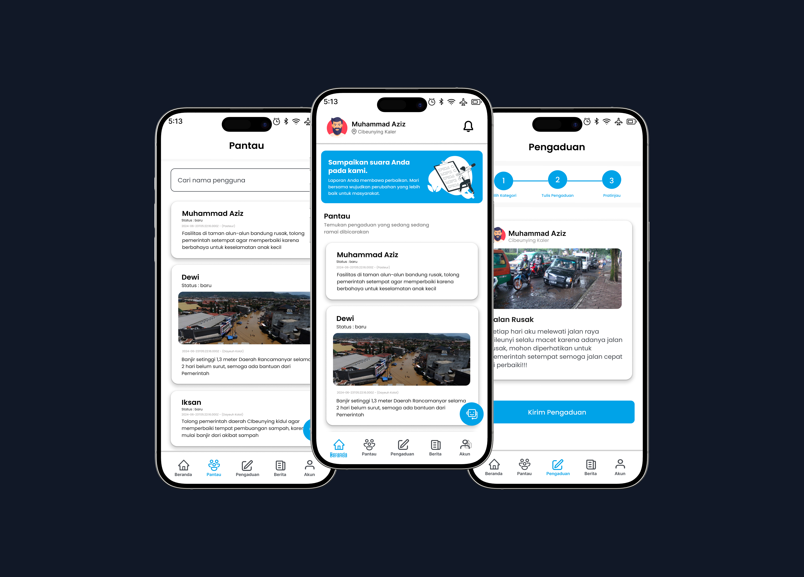
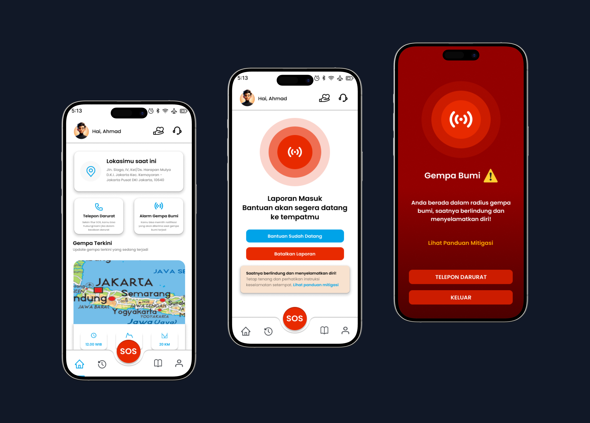

STUDI KASUS

TANGGAP
Platform Pengaduan Masyarakat
Aplikasi mobile yang dirancang untuk memudahkan masyarakat dalam melaporkan berbagai permasalahan publik secara cepat dan terstruktur. Pengguna dapat mengirim laporan, memantau status penanganan, serta berinteraksi dengan pihak terkait untuk meningkatkan transparansi dan efektivitas layanan publik.
Lihat Studi Kasus
PANTAU
Prediksi Harga Cabai Rawit
Platform berbasis web yang dirancang untuk memprediksi harga cabai rawit menggunakan data pasar historis dan machine learning. Sistem ini membantu pengguna menganalisis tren harga, mengidentifikasi pola musiman, serta mendukung pengambilan keputusan yang lebih tepat bagi pelaku dan pemangku kepentingan di sektor pertanian.
Lihat Studi Kasus
BINA BOLA
Aplikasi Latihan Sepak Bola Remaja
Aplikasi mobile yang dirancang untuk membantu pemain muda meningkatkan kemampuan sepak bola melalui latihan terstruktur, sesi interaktif, dan pelacakan performa. Pelatih dan orang tua dapat memantau perkembangan, memberikan umpan balik, serta mendukung pemain dalam mengembangkan teknik, kelincahan, dan kerja sama tim.
Lihat Studi Kasus
SIAGA
Aplikasi Notifikasi Gempa & SOS
Aplikasi mobile yang memberikan notifikasi gempa secara real-time dan memungkinkan pengguna mengirim sinyal SOS saat keadaan darurat. Dirancang untuk meningkatkan respons cepat dan keselamatan pengguna dalam situasi bencana.
Lihat Studi Kasus